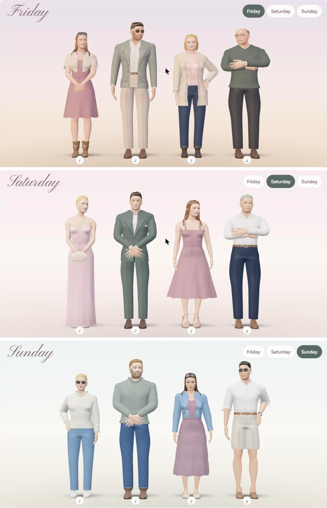

Real bodies
The bodies come from the MakeHuman base mesh (public domain): three body shapes with 163 bones and their skin weights, packed into one file. Every guest is posed and scaled a little differently, so no two are the same size.
Jean & Shani · Dullstroom · March 2027
This is the “What to wear” page of our wedding website. Instead of a list of dress codes, twelve guests show what to wear on each day. They breathe, shift their weight, look around, fold their arms, and you can turn them and try the wedding colours on them.
No game engine and no 3D library: about 250 KB of plain JavaScript and WebGL, and one 760 KB file for the bodies.
The guests are getting dressed…
Drag a guest to turn them tap one to step closer
This demo needs WebGL, which this browser or device does not offer. Here is what it looks like:

The bodies come from the MakeHuman base mesh (public domain): three body shapes with 163 bones and their skin weights, packed into one file. Every guest is posed and scaled a little differently, so no two are the same size.
Jackets with lapels and cuffs, shirts, knits, jeans with top-stitching, dresses, shoes made on lasts: each garment is a surface built round the body it is worn on, so it fits that body and nothing pokes through.
Skirts and long hair are small position-based cloth simulations. Turn a guest quickly and the dress swings out, lags and settles. On a slow phone the cloth simply rests.
Each guest has a small mind: they breathe, shift their weight, look at you, at a neighbour, or away; eyes first, head after. They blink, and smile when you step up to them.
Folded arms, a hand on a hip, hands held in front: each pose is solved on that guest’s own body and clothes, so a hand lies on the hip or on the other hand, never in it. The way from one pose to the next is checked along its whole length.
One key light with a soft shadow map, a faint reflection on the floor. The stage watches its own frame time and does less on slower devices, and nothing moves for people who ask for reduced motion.